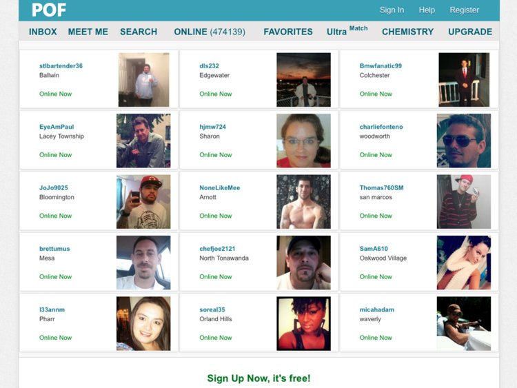

Welcome to Suchelablue
A boy doing elite dating | Online dating with a computer
2020.09.07 07:45A boy doing elite dating
Online dating with a computer
Menu
Skip to content Home AboutVirtuelle Liebesduselei Fluch oder Segen
Posted on September 12, 2016 by addiIn den letzten Jahren rückt das Dating, mit im Internet gefundenen Partnern, immer mehr in den Vordergrund, wenn es darum geht neue Leute kennen zu lernen. Man sucht nicht mehr den mühsamen Weg in die Bibliothek oder in die Kirchengruppe um eventuell Gleichgesinnte und Seelenverwandte aufzuspüren. Viel einfacher geht es da, wenn man den PC die Arbeit machen lässt und verschiedene Profile so lange durchsucht werden, bis der ideale Traumpartner endlich gefunden ist. Manche wollen auf diesen Dienst gar nicht mehr verzichten.
Die Angst liebt mit beim unbekannten Date
Das stärkste Argument gegen eine Hinzuziehung des PCs um das Liebesleben anzuheizen ist die Unpersönlichkeit. Man weiß nicht mit wem man es zu tun hat. Falsche Profile und weitere phantasievolle Ausschmückungen sind noch das kleinste Übel. Verabredet hat man sich schnell, z.B. über die Flirt-App Zoosk . Aber wenn es dann darum geht, dass man tatsächlich gemeinsam ein Treffen arrangieren will, schwebt mit dem Unbekannten auch eine gewisse Gefahr immer mit. Nicht zuletzt durch das tatsächliche Geschehen von einigen unangenehmen Aufeinandertreffen werden diese Ängste auch immer wieder neu entfacht. Die Angst liebt mit, und das nicht nur beim ersten Treffen.
Der ideale Partner keine Wunschvorstellung mehr
Andererseits gab es aber auch noch nie solch vielfältige Auswahlmöglichkeiten bei der Partnerwahl. Ein Profil ist schnell erstellt und schon hagelt es Vorschläge, mit wem man denn am besten den kommenden Abend verbringen könnte. Man kann sich seinen Partner quasi zusammenbauen und so strukturieren, wie man ihn immer haben wollte. Gibt es keinen Treffer bei der Suche, dann muss man halt ein paar Zugeständnisse machen. Vielleicht darf er dann doch Raucher sein, oder sie ständig zum Shopping losziehen.
Die Traumfrau nur wenige Klicks entfernt
Auch schüchterne Menschen fühlen sich plötzlich beflügelt und trauen sich in der Anonymität aus ihrer Höhle herauszukommen. Manch einer soll so schon sein Glück gefunden haben. Wer Probleme hatte die Traumfrau wirklich anzusprechen, weil man sofort der Meinung war, dass man sich blamieren könnte und ohnehin einen Korb erhält, der traut sich nun viel mehr zu, da ja ein paar Klicks weiter mitunter schon wieder die nächste Traumfrau wartet. Oder der nächste Sex .
Insegsamt muss man sagen, dass die bunte Multimediawelt durchaus das Liebesleben beeinflusst. Das zeigt alleine schon die große Menge der Anbieter. Es ist sicherlich nicht jedermanns Sache, aber für bestimmte Menschen kann dies eine durchaus willkommene Erleichterung sein. Daher sollte ein generelles verteufeln auch nicht stattfinden, sondern eher ein bewusster und verantwortungsvoller Umgang mit der Materie.
Posted in Virtual RealityWie viel Sex verträgt der Mensch?
Posted on July 8, 2016 by addiNun bei dieser Frage gehen die Meinungen doch weit auseinander, wobei es mittlerweile auch dazu so einige Studien gibt. Allerdings eine direkt Antwort gibt es auch da nicht wirklich, denn die meisten Befragten wollten mehr Sex haben, als dies derzeit möglich ist.
Immer dann Sex wenn gewünscht
Das kam dann bei diesen Studien auch heraus, denn gerade das kommt in vielen Beziehungen zu kurz. Hat Frau Lust auf Sex, dann ist der Mann einfach nur müde. Umgekehrt funktioniert das genauso, allerdings sind Frauen da noch erfindungsreicher. Also wollen die Paare auch mehrmals in der Woche Sex, aber leider funktioniert das dann so nicht. Eine Studie hat herausgefunden das die Deutschen nur 1,5 Mal in der Woche Sex haben, was dann doch so einige Menschen erschreckt. Wobei viele überzeugt sind, das die Nachbarn mehr Sex haben. Doch das nutzt alles nichts, wenn jemand Lust hat und gerade niemand da ist, der ebenso Lust auf Sex hat. Auf langes Suchen hat auch niemand Lust, womit dann der Frust schon fast vorprogrammiert ist. Doch genau hierfür gibt es dann doch eine Lösung, damit jeder dann schnell zu schönen Stunde kommt. Denn auf eine lange Suche hat niemand Lust, wobei der Erfolg dann immer offen ist. Das ist im Internet nicht so, denn hier sind die Menschen ebenfalls auf der Suche. Verabredungen zum Sex sind so einfach und schnell gefunden.
Das Internet ist sehr hilfreich
War es bis vor einigen Jahren noch sehr umständlich, um sich eine nette Nacht machen zu können, so ist das heute ganze leicht. Verschiedene Casual Sex Portale wie z.B. C-date haben sich genau auf solche Menschen spezialisiert, womit dann ein Treffen schnell vereinbart ist. Denn eine direkte Antwort wie viel Sex der Menschen verträgt, gibt es keine klare Antwort. Natürlich gibt es die sogenannte Sexsucht, doch diese drückt sich dann total anders aus. Normal ist das, was ein Mensch empfindet, gerade was den Sex betrifft. An der Häufigkeit kann dies dann nicht immer festgemacht werden. Doch jemanden zu finden für einige schöne Stunden, das geht im Internet ganz leicht. Denn hier sind nur Menschen, die das schöne und schnelle Vergnügen suchen. Ganz ohne Stress und Beziehung, genau das macht den guten Sex dann auch aus. Somit muss niemand mehr von lustvollen Stunden träumen, sondern kann diese einfach erleben.
Fazit:
Die Deutschen haben in Beziehungen sehr wenig Sex, was dann eine Befragung ergeben hat. Doch alle wünschen sich mehr Sex, was dann diese Befragung ebenfalls ergeben hat. Somit ist das Internet hier wirklich mehr als hilfreich, da sich hier schnell eine Verabredung finden lässt. Ganz, ohne erst stundenlang zu suchen, sondern direkt alles auf den Punkt gebracht. Denn die Menschen die sich auf solchen Portalen Treffen, die Wissen schon was sie wollen. Einfach schnell jemanden Finden, um dann ein Treffen zu vereinbaren. Damit dann die Statistik vielleicht irgendwann einmal bessere Zahlen bringt, denn solche Sexmuffel sind die Deutschen dann doch nicht. Im Internet einfach verabreden, das ist jederzeit möglich. Egal an welchem Tag oder zu welcher Tageszeit, denn Lust, hat da keine feste Zeiten.
Posted in Casual Dating , Online DatingLooking for Love
Posted on June 8, 2016 by addiToday, in the 21 st Century, it is considered that there are now 7 social classes and these are:
Elite – The most privileged of the classes have usually been to private school or one of the better universities and probably enjoys classical music and opera. Established Middle Class – The second most affluent group of people enjoy a wide variety of social activities and are most likely to be in one or other of the more traditional professions. Technical middle class – Although a small group, members of this new class are distinctive and prosperous. Usually coming from middle class backgrounds, they tend to work in either in the fields of science or technology. This group often socializes among themselves or on the social media. New affluent workers – This group, although not well-off, are financial secure. They have lots of cultural interests and have usually come from working class backgrounds. Traditional working class – This group has the oldest average age and usually stays away from emerging cultures, such as social media. Emergent service workers –This group will have been to high school and know people from all the other groups. They will take part in a wide variety of cultural activities but are not usually financial secure. Precariat – This is the poorest group and so 80% will rent their homes and do not own them. This group tends to socialize amongst itself and don’t have too broad a range of social interests.Dating
Although many of these groups perhaps prefer to date someone from the same group, it was particularly difficult for the elite group to find someone suitable to go on a date with. Any chance encounter with a potential date may not immediate disclose what group that person was in and so could lead to being a waste of time. It wasn’t just that the potential date may not be so wealthy but it would also mean that they probably had totally different ideas of what fun was, preferring hip-hop to classical music.
Online Dating Sites
Although this elite group could of course join a dating site, it would take them hundreds of searches of profiles to find someone suitable. Until recently that is. More recently, there have emerged elite dating sites which specifically cater to this group of people, making them a far more feasible option. These specialized dating sites have extensive questionnaires about where and what education members have, what are their backgrounds, interests and perhaps professions. This makes it easier for a member of the elite to find exactly what they are looking for quickly.
Traditional Dating
Although for people in other groups, the traditional manner of finding dates may still be suitable but the fast life styles and busy business schedules of the elite, made the old style of finding dates virtually impossible. With their bust schedules, it was very important that although they could find time to date, they could not afford the time dating people that were unsuitable. Specialist dating sites now help them to avoid this.
Elite dating London Elite dating Birmingham Elite dating Glasgow Elite dating Liverpool Elite dating Leeds Elite dating Sheffield Elite dating Manchester Elite dating Cardiff Elite dating Belfast Elite dating Newcastle Elite dating PortsmouthNo Risk
Not only do these new dating sites make it easier but there are no risks involved as they can try free trials, completing their questionnaires and viewing possible matches, prior to even committing to join. Like many other dating sites, these new specialist dating sites offer discretion both whilst just looking for dates and after you have found one.
Lasting Relationships
As these specialist dating sites cater to the elite, many people of like minds are on them and they are rapidly becoming the place to find partners for meaningful and lasting relationships. Knowing about the person because of the extensive questionnaire, before you date them, helps to achieve this. Although you will be asked specifics about potential partners and be shown a list of members that meet your specifications, you can request that those that fail to meet just one of your specifics, perhaps age or distance from you, can also be added, giving you a far wider selection to choose from.
Comment, male age 28 – “Although I had tried many different dating sites, I just was not able to find anyone that shared my love of the opera but now I’ve joined one of the elite sites, there are plenty of potential partners to choose from so I never have to go to the opera alone again.”
Female aged 25 commented, “Whoever I dated on other dating sites, always wanted to either go straight to bed or go clubbing. Now I have joined one of the elite dating sites though, I have found people that prefer much more suitable activities like a concert or the opening of a new gallery. Thankfully I should never have to visit one of those so called clubs again.”
Posted in Elite dating , Online Dating | Tagged Elite DatingElite Dating in the UK
Posted on March 2, 2016 by addiAre you highly educated, successful, lead a very busy lifestyle, and single? Then you are the perfect description of an elite single. Often successful people who are career focused work long hours and don’t have the time to meet other people like themselves. The good news is that there are dating websites that are perfect for you, these include elitesingles.co.uk and academicsingles.co.uk .
These dating websites are perfect for high-flying and busy people to find love. If you fit this description, then you have nothing to lose by signing up to one of these two websites and making use of their free trial period .
No longer is it a social taboo to use the internet to find love. Time have changed, and the people are changing with them. Nowadays, many people find love online for a number of reasons. For successful people like you, it’s usually because you don’t have time to play the dating game. Elite Singles much just be the website to help you save time and meet the partner of your dreams!
How to use dating sites
Most dating sites are quite similar in how they function and elitesingles.co.uk and academicsingles.co.uk are also much the same. When you visit one of these websites, they nearly all have a free trial period. The first step to finding success on dating websites is to sign up. Complete your profile and take a personality test.
After you have taken the personality test, the website’s algorithms will start matching you with people that fit with your tastes and vice versa.
At this point, you haven’t taken any risk because you’re signing up for a free account. You can use this free trial to test out all the functions on the dating site with some restrictions. Usually you aren’t allowed to send messages or contact other users until you pay for a subscription. So you can use this time to see if the website and service is good for you.
If you decide to opt for a paid membership, you’ll be able to use all the services with no restrictions at all. This means that after the algorithms have matched you with other users, you’re free to send them message.
After you have struck up a conversation with someone, you can then arrange to meet them if you both want to. After you have successfully found love, you just need to cancel your subscription and that’s it. You can live out the rest of your life happily ever after and share the story of how you met with your grandchildren
Finding Love in London!
We have a great success story to share with you from one elite dating site . This story starts with the NHS and two young doctors.
One young doctor was a working in a hospital in East London and he had been working there for a few years. The doctor was still quite young; he was just a few months’ shy of this 30 th birthday. As he was working in the Accident and Emergency ward, he worked very long hours and rarely had time to eat, let alone go out and meet people.
Similarly, the other doctor was working in South London and being in her late twenties, she was a similar age. She too was working in a hospital, but had gone into surgery. Her hours were very erratic and long, much like working in A&E.
Both doctors were looking for a partner and happened to find Elite Singles around the same time. Both went through the process, signed up and started getting matches. After messaging for a few weeks, they somehow found the time to meet up.
Both are now engaged to be married and will hopefully have a long and successful marriage. It really is that easy. You just sign up, complete your profile, take the personality test and let the algorithm start to match you up with people. Then you get chatting to other members and if you find somebody who is likeminded and wants to meet, you can arrange to meet for a date.
It’s always a good idea to meet someone in a public place when meeting them for the first time. After all, you may have only sent messages online and you don’t actually know the person at all.
Free Trial
Both Elite Singles and Academic Singles offer a free trial so that you can test their service. You don’t have to start paying until you want to start using the full service and you can use the time to test out the functionality of the website, how many matches you get, and how you can use the website to be successful and find a partner.
The free trial is perfectly and no risk, because you don’t need to enter any payment information until you want to become a full member or subscriber to the website. After you have used a few different websites, you can choose the one that feels right for you. When you’re ready, just sign up to the full membership and you can use all the features without any restrictions.
Finding Love Online with Elite Singles
If you’re finding that you’re always too busy to really spend the time to meet people, then choosing an online service such as Elite Singles and Academic Singles can be really helpful. You can find people that are interested in the same things and start chatting to a number of people before making a date to meet up.
These websites are specifically designed for high-flying over achievers who are so busy that they don’t get a lot of time to get out and meet people. Career-minded people often have problems trying to find the right one, but more and more are finding love successfully online and any taboo associated with online date has since gone.
So what are you waiting for? Get yourself over to your elite singles website of choice and start looking for a partner. It only takes five minutes to sign up, so you have nothing to lose!
Posted in Elite datingAcademic singles in the UK
Elite dating London , Elite dating Birmingham , Elite dating Glasgow , Elite dating Liverpool , Elite dating Leeds , Elite dating Sheffield , Elite dating Bristol , Elite dating Manchester , Elite dating Cardiff , Elite dating Leicester , Elite dating Leicestershire , Elite dating Coventry , Elite dating Hull , Elite dating Bradford , Elite dating Bromley , Elite dating Belfast , Elite dating N. Ireland , Elite dating Stoke-on-Trent , Elite dating Wolverhampton , Elite dating Nottinghamshire , Elite dating Nottingham , Elite dating Plymouth , Elite dating Devon , Elite dating Southampton , Elite dating Reading , Elite dating Barnsley , Elite dating Buckinghamshire , Elite dating Milton Keynes , Elite dating Derbyshire , Elite dating Derby , Elite dating Warrington , Elite dating Aberdeen , Elite dating Dudley , Elite dating Newcastle , Elite dating Northampton , Elite dating Northamptonshire , Elite dating Portsmouth , Elite dating Luton , Elite dating Preston , Elite dating Lancashire , Elite dating Swansea , Elite dating Sunderland , Elite dating Norwich , Elite dating Norfolk , Elite dating Walsall , Elite dating Telford , Elite dating Dorset , Elite dating Bournemouth , Elite dating Southend and Elite dating EssexPages
About